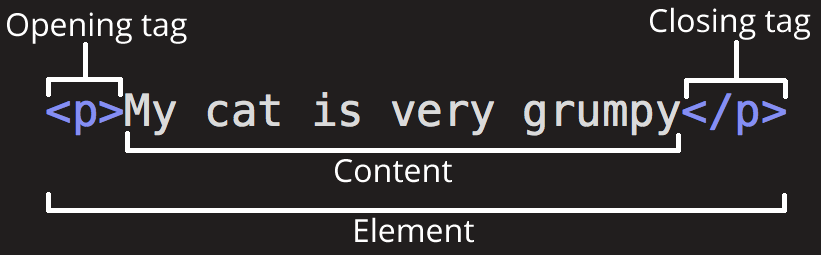

За какво е този урок?
Ще създадете първия си цял HTML документ: правилна структура, български текст и проверка в браузър.
Четете обясненията, изпробвайте действията и запазвайте работата си. Отворените въпроси показват примерен отговор след предаване. При собствена тема са възможни различни обосновани решения.
Услугата World Wide Web представлява мрежа от свързани онлайн документи, създадени с HTML (англ. HyperText Markup Language – език за маркиране на хипертекст). HTML е основният език за описание на уеб страници.
HTML: елементи, тагове и влагане
История
HTML е разработен от Тим Бърнърс-Лий в ЦЕРН, Женева, като средство за обмен на научна и техническа документация. Работата по World Wide Web започва през 1989 г., а първото публикувано описание „HTML tags“ е от 1991 г. и съдържа 18 елемента. Първоначално езикът служи за структуриране на документи за хора без специализирани знания за оформление. По-късно се добавят възможности за мултимедия и графичен дизайн. HTML постепенно се стандартизира, а HTML5 е публикуван като препоръка през 2014 г. Днес HTML се развива като жив стандарт (Living Standard), а името HTML5 продължава да се използва за съвременния HTML. Бърнърс-Лий е британски учен, а ЦЕРН се намира в Швейцария. Първоначалният HTML има сравнително проста структура и не задава конкретно устройство за показване на документа. Съвременната спецификация се поддържа като HTML Living Standard от WHATWG.

Редактор и разширение на файла
Създаването на уеб страница с помощта на HTML може да се извърши с обикновен текстов редактор (Notepad, Notepad++) или специализирани приложения за създаване на HTML страници (BlueGriffon, Dreamweaver), като се записва в текстови файлове с разширение .html или .htm.
HTML документът съдържа елементи, които обикновено се маркират с отварящ и затварящ таг.
Тагове
Тагът (англ. tag – етикет) се състои от текст, заграден в ъглови скоби (например <html>), и указва на браузъра как да интерпретира последващата информация, за да бъде показана на дисплея на устройството.
Справочник за HTML тагове
Всеки таг има конкретно предназначение. Таблица с всички възможни тагове и тяхното предназначение можете да видите на адрес www.w3schools.com/tags/ и в справочника на MDN за елементите.
Всеки HTML елемент, с малки изключения, се описва по следния начин:
- таг за начало (отварящ) – маркира началото на HTML елемента, например
<html>; - съдържание;
- таг за край (затварящ) – маркира края на HTML елемента; за разлика от началния таг крайният има наклонена надясно черта пред името си, например
</html>.
Ето как изглежда цялата комбинация:
<html> … съдържание … </html>
Влагане на HTML елементи
Елементите могат да се влагат един в друг, като първият отворен елемент се затваря последен. Например <p>Това е <strong>важно</strong>.</p>. Елементите img, br и meta са празни (void) и нямат затварящ таг.
Атрибути: име, стойност и предназначение
Атрибути
Имена и стойности на атрибутите
Към много от таговете могат да се добавят атрибути (допълнителни характеристики), които съдържат допълнителна информация за тага. Например в тага за изображение <img>
<img src="img_girl.jpg" width="500" height="600">
има атрибути с имена src, width, height, които имат следните стойности:
src="img_girl.jpg"
width="500"
height="600"
Задължителни и допълнителни атрибути
Атрибутите могат да бъдат задължителни и допълнителни, като това зависи от съответния таг. В горния пример тагът <img> изисква задължителен атрибут src; добавяйте и подходящ alt текст. Атрибутите width и height могат и да не се задават. Всеки таг поддържа само определен набор от атрибути – т.е., неподдържаните атрибути обикновено нямат очаквания ефект; съществуват и общи атрибути, както и потребителски атрибути data-*. Стойността на атрибутите се огражда в кавички (" ").
Пример:
използване на атрибута за хипервръзка href
<a href="https://www.google.bg/"> ………. </a>
Справочник за атрибутите
Списък на атрибутите, които се поддържат в HTML таговете, можете да видите на адрес www.w3schools.com/tags/ref_attributes.asp и в справочника на MDN за атрибутите.
Структура на документа: head и body
Структура на HTML документ
HTML документите са съставени от две основни части: глава (head) и тяло (body).
Декларацията DOCTYPE
HTML документът трябва да започва с декларацията <!DOCTYPE html>. Това е декларация, която позволява документът да се обработва в стандартен режим. За съвременния HTML използваме краткия запис без номер на версията.
Основните тагове, които оформят HTML документ, са:
<html>
Елементът html
Указва на браузъра, че това е HTML документ. Отбелязва началото и края на документа и съдържа всички други негови елементи. Въвежда се след началния таг <!DOCTYPE html>.
<head>
Елементът head
Съдържа заглавната част на файла и информация за идентифициране на HTML документа. Между неговото начало и край се поставя тагът за заглавие на документа.
<title>
Елементът title
Съдържа заглавието на документа. Той е част от елемента head. Указаното заглавие на документ се появява при интерпретация от браузъра в заглавната линия на неговия прозорец. Текстът на заглавието не се включва и не се изобразява в полето на документа. Добре е то да бъде кратко и ясно, например около 40 – 50 знака; това не е техническо ограничение и да описва най-точно съдържанието на страницата.
Метаданни в head
Освен заглавието на страницата, между таговете head се поставят и специалните метатагове, описващи съдържанието на страницата или указващи някакво поведение на браузъра, търсещите машини, кеширащите системи и други.
<body>
Елементът body
Включва основното съдържание на документа – текст, хипервръзки, изображения, таблици и др. Това е тялото на документа, където се разполага изобразяваната от браузъра информация.
Пример:
<!DOCTYPE html>
<html>
<head>
<title>Заглавие на документа</title>
</head>
<body>
Съдържание на документа
</body>
</html>
От текст към HTML страница
Задача.
Изтеглете текста за началната страница. В нов файл създайте пълен HTML документ, поставете текста в body като заглавие и параграфи и запишете като 14-events.html. Следвайте указанията за записване и проверка по-долу.
Минимален документ и справочници
Пълен минимален HTML документ
<!doctype html>
<html lang="bg">
<head>
<meta charset="utf-8">
<meta name="viewport" content="width=device-width, initial-scale=1">
<title>Предстоящи събития в Карлово</title>
</head>
<body>
<h1>Предстоящи събития</h1>
<p>Тук ще добавим програмата на събитията.</p>
</body>
</html>UTF-8 позволява правилно изписване на кирилица. Атрибутът lang указва езика. Елементите img, br, input, meta и link са празни елементи и нямат затварящ таг.
Основни понятия
HTML (HyperText Markup Language) – стандартен маркиращ език за създаване на документи, които да се визуализират в уеб браузър.
HTML елемент – основен структурен компонент в HTML документа. Обикновено има отварящ таг, съдържание и затварящ таг. Празните елементи като img и br нямат съдържание и затварящ таг.
HTML таг – етикет, заграден в ъглови скоби (< >). Таговете указват на браузъра как да интерпретира информацията, описана в HTML документа, като определят началото и края на описанието на HTML елементите, както и тяхното съдържание, вид и атрибути.
HTML атрибут – задава основни или допълнителни характеристики на HTML елемента. Описва се в отварящия таг, най-често като двойка атрибут=стойност.
Онлайн инструменти и полезни връзки
Създайте страница с примерна програма
- Изтеглете началния текст. Създайте нов текстов файл в HTML редактор.
- Започнете с
<!doctype html>,html lang="bg", head и body. В head поставете meta charset="utf-8", meta viewport и title „Карлово — примерна програма“. - В body добавете h1 със заглавието, параграф за учебния характер на данните и три параграфа със събитията. Проверете влагането и затварящите тагове.
- Запазете с кодировка UTF-8 като
14-events.html. При нужда изберете „Всички файлове“, за да не получите .html.txt. Включете показването на разширенията в папката. - Отворете в браузър. Сравнете надписа на раздела (title) със заглавието в страницата (h1). Променете един час, запазете и презаредете. Кирилицата трябва да се чете, а таговете да не се виждат като обикновен текст.
Предавате пълния HTML файл, а не снимка на екрана. Не е нужно още да добавяте CSS.
Самопроверка
Таг или елемент?
<p> и </p> са тагове; двата тага заедно със съдържанието образуват елемента. Img е празен елемент и няма затварящ таг. Проверете дали не наричате целия параграф само „таг“.
Къде се показва заглавието?
Title е в head и обичайно се показва в раздела на браузъра; h1 е видимо заглавие в body. Meta charset е в head. Еднакъв текст в title и h1 не ги прави един елемент.
Файлът показва таговете като текст
Покажете разширенията, запазете като обикновен UTF-8 текст с последно разширение .html и отворете правилния файл в браузъра. След редакция запазвайте и презареждайте.
Какво да запомним?
- HTML описва структурата и смисъла на съдържанието.
- Тагът маркира елемент; някои елементи са празни.
- Атрибутите добавят свойства в отварящия таг.
- Head съдържа метаданни, а body — видимото съдържание.
- Записваме UTF-8 .html и проверяваме в браузър.